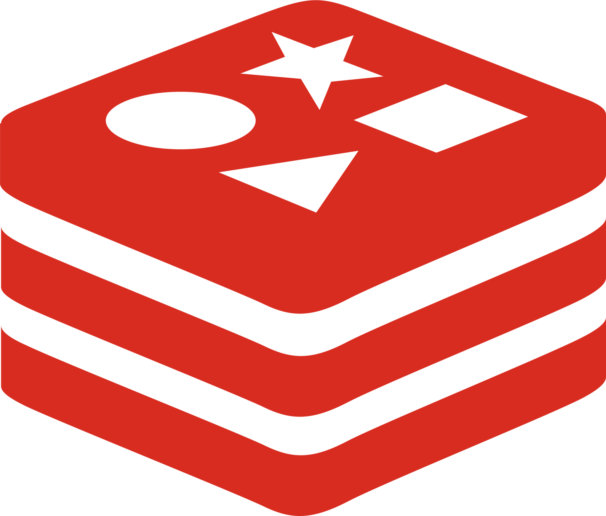

About Me
Hello! I'm Janitha Devin Ratnayake. As a software engineer, I am committed to delivering solutions that meet business needs with precision and reliability. By collaborating with cross-functional teams, I ensure that the user’s needs are met effectively. My philosophy of prioritizing quality over quantity drives my focus on creating scalable systems with a low bug rate, offering exceptional value and long-term maintainability.
Experience
Software Engineer - WealthOS Asia Pacific (Pvt) Ltd.May 2024 - Present
- Gain hands-on experience in wealth management, developing business and technical features to enhance the scalability of SaaS clients.
- Improve system reliability by efficiently resolving highpriority issues, enhancing overall client satisfaction.
- Strengthen expertise in coding best practices and test automation to ensure high-quality deliverables.
- Technologies: Node.js (Express), TypeScript, React, MongoDB, Redis, Docker, Terraform, AWS (Lambda, DynamoDB, DocumentDB, ElastiCache, IAM, S3, API Gateway, CloudWatch, CloudFormation, SAM), SonarCloud, Snyk, Swagger/OpenAPI 3.0, Mongoose, Mocha, Chai, Bitbucket CI/CD
Software Engineer Intern - Xeptagon (Pvt) Ltd.
Nov 2022 - Apr 2023
- Designed and implemented an ETL process system to streamline data workflows.
- Technologies: Python, Azure (Synapse Analytics, Blob Storage), Selenium
Skills
Programming Languages
 TypeScript
TypeScript
 Python
Python
 C
C
 C++
C++
 Java
Java
Web Development
 React
React
 Node.js (Express)
Node.js (Express)
 Laravel
Laravel
Databases
 MongoDB
MongoDB

Redis
|
 MySQL
MySQL
 PostgreSQL
PostgreSQL
Other Technologies
 Git
Git
 Linux
Linux
 Docker
Docker
Projects
EMvidenceJun 2023 - May 2024
- EMvidence is a software tool designed to extract forensic insights from electromagnetic (EM) signals emitted by IoT devices.
- Enables users to capture EM signals from the device being tested using Software-defined Radio (SDR) hardware, specifically the HackRF One.
- Users can preprocess and analyze the captured EM signals using various modules within EMvidence to gain insights into the tested IoT devices.
- Allows users to develop third-party modules tailored to their specific needs, fostering open-source development of preprocessing and analysis plugins.
- Provides an alternative forensic solution for IoT devices found in investigations, as opposed to traditional and invasive digital forensic techniques.
-
Contributors:
Senal Punsara,
Dinil Ratnayake,
Asanka Sayakkara,
Akila Wickramasekara
ARTTIC
Apr 2022 - Oct 2022
- ARTTIC is a community platform empowering Non-Fungible Token (NFT) creators to globally market their work by connecting them with a network of NFT followers.
- The platform provides information on newly minted NFTs, their background stories, upcoming NFTs, and previous works of the creator.
- Creators can publish all the latest information on their profiles and receive feedback from followers.
- This platform is designed for existing NFT creators and followers, as well as anyone interested in joining the industry in the future.
-
Contributors:
Charith Anjana,
Mahesh Lakshan ,
Maleesha Gunarathna ,
Lavinka Weerasekara ,
Thilina Halloluwa
ALec
Mar 2021 - Mar 2022
- ALec is a mobile and web application that addresses the challenges of low student engagement and interaction in the classroom.
- It allows lecturers to give small quizzes during lectures, which students can answer via their smartphones, giving the lecturer a real-time understanding of students' knowledge and understanding of the lecture.
- Students can also ask questions anonymously through the app, increasing participation and interaction in class.
- The app provides a platform for self-evaluation through a leaderboard and review system, helping students to pay closer attention to course content.
- ALec strengthens the interaction between lecturers and students, increasing efficiency and popularity for both parties, and ultimately improving the overall learning experience.
-
Contributors:
Charith Anjana,
Pansilu Gunaratna ,
Sumudu Wathsala ,
Dinuni Fernando